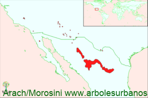

Click en las imágenes para ampliar

{kind=link}
{kind=link}
{kind=link}
- NOMBRE CIENTIFICO
- Cupressus arizonica
- FAMILIA BOTÁNICA
- Cupresáceas
- ORIGEN
- Se encuentra en el sur de Estados (en Arizona, Nuevo México y California) y en el norte de México (en Coahuila, Chihuahua, Durango, Tamaulipas, Zacatecas y el norte de Baja California). Crece entre los 1.000 y 2.900 msnm. En lugares de muy bajas precipitaciones de entre 250 y 500 mm. Hay pocos bosques puros se asocia con Enebros, Pinos y Robles
- DESCRIPCIÓN GENERAL
- Es una conífera de mediano porte llegando entre 15 y 20 metros de altura y 1 metro de diámetro, se cita un ejemplar de 28 metros de altura y 2.90 m de diámetro en las montañas de Santa Catalina en Arizona. Forma una copa de estrechamente cónica a globosa. Su corteza es pardo rojiza a violácea, descamándose en largas tiras finas a veces en forma helicoidal, esto varia en las distintas variedades.
- HOJAS
- Son muy pequeñas de entre 2 y 4 mm, son escuamiformes, aovadas, de base ancha dispuestas de manera opuesto decusadas. De color glauco o verde azulado.
- ESTRÓBILOS
- Los masculinos son pequeños de hasta 5 mm, de color amarillento, solitarios y terminales. Los femeninos son globosos de color verde azulado en principio, luego marrón brillante, de hasta 3 cm de diámetro, formado por 3 o 5 pares de escamas peltadas
- USOS
- Su madera tiene una albura de color amarillento y duramen rojizo u ocre, es liviana de mediana calidad. En general tiene usos ornamentales, es una especie muy difundida por sus bajos requerimientos de humedad y edáficos, se lo planta como ejemplar aislado y también se lo utiliza en la formación de cercos vivos.
- REPRODUCCIÓN
- Se lo puede sembrar a mediados del otoño, o estratificación mediante, se puede sembrar en primavera.
- PARTICULARIDADES
- Se reconocen 5 variedades naturales, que están en distintos pisos altitudinales y latitudinales, lo que hace que muchas de sus características tales como talla, corteza, colr de follaje, difieran entre si. También hay que recordar que esta especie se hibrida naturalmente con otras especies del género Cupressus